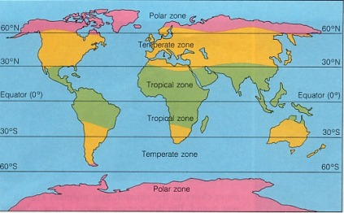

Summary: Latitude vs. X

The purpose of this project is to see how weather changes as you get closer to equator. To accomplish this analysis we first pulled data from OpenWeatherMap API to assemble the dataset over 500 cities.
After assembling the dataset, we used Matplotlib to plot various aspects of weather vs latitude. Factors we included were Max Temperture, Humidity, Wind Speed and Cloudiness. This site provides the datsource, plots and analysis.
The top navigation drop down menu "Plots" shows the individual weather parameter plots vs latitude
The top navigation menu item "Comparison" shows all the 4 individual weather parameter plots vs latitude
The top navigation menu "Data" shows the raw data that was used to plot.
The right section of this page had links to the 4 visualizations analyzed on this website.
The world zone map shows the three climate zones. The cities weather data gets not only affected by latitude but also by parameters like temperature of oceans, the wind patterns, land masses and altitudes.
What Are Latitude and Longitude?
Any point on the surface of the Earth can be defined by a pair of angular coordinates known as longitude and latitude. Longitude is a line stretching from pole to pole with a given angular displacement from the Prime Meridian, which runs through Greenwich, England. Latitude is defined as the angular distance from the equator and is designated North or South depending on the hemisphere. The equator defines zero degrees latitude, which locates the North and South Poles at 90 degrees North and South respectively.
National Geographic is a great resource to study weather.
Visualizations